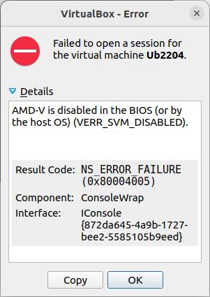
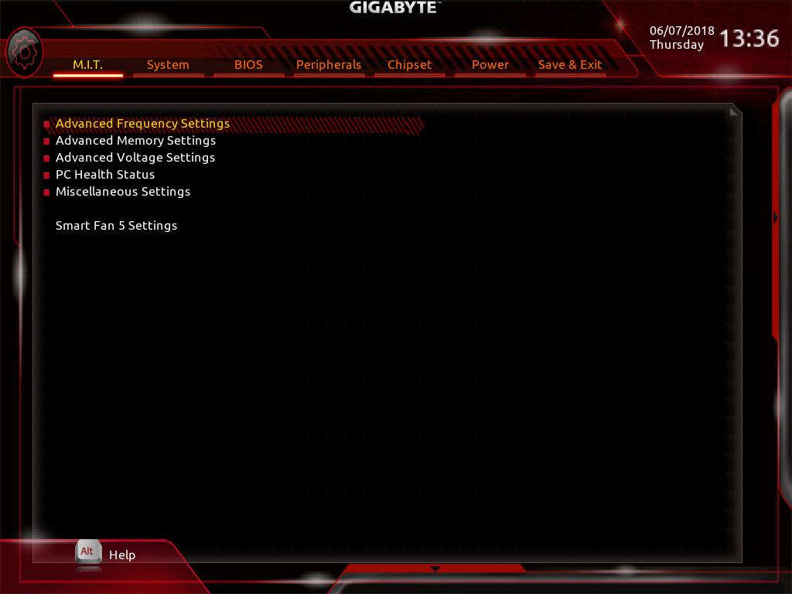
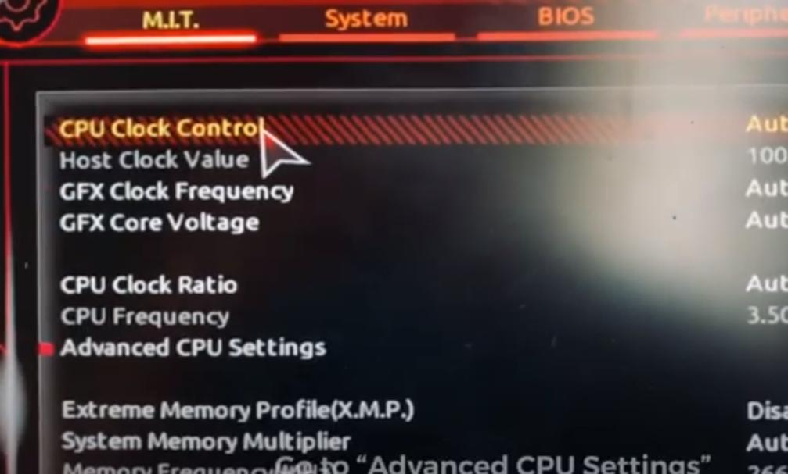
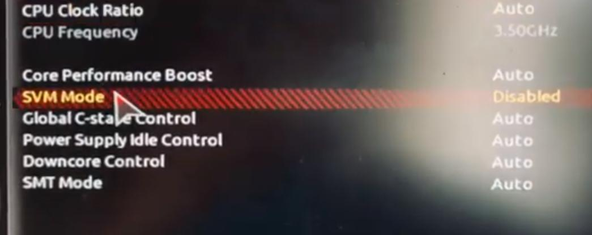

Virtualbox installation
On Gigabyte B450M motherboard with AMD Ryzen 5 3600
Install Virtualbox from Ubuntu software center
Create VM for Ubuntu 22.04
start: get error
AMD-V is disabled in the BIOS (or by the host OS) (VERR_SVM_DISABLED).

Fix:
Enter BIOS
Click on Advanced Frequency Settings

Click on Advanced CPU Settings

Enable SVM Mode

https://forums.virtualbox.org/viewtopic.php?f=1&t=62339
https://www.youtube.com/watch?v=xvr7S4HTmGg
Virtualbox Guest Additions
This will add screen size resize and other goodies
Menu Devices -> Insert Guest Additions CD image
and click yes on download.
When CD symbol appears, click on it and open terminal in CD root.
run
./VBoxLinuxAdditions.run
and reboot Ubuntu VM.
snap storage space
snap packages can use a lot of storage space on your computer.
snap keeps multiple older versions of packages.
For example, view the contents of
/var/lib/snapd/snaps
To limit the number of kept old versions of packages, run
sudo snap set system refresh.retain=2
To remove unnecessary packages, create a script with the following content:
#!/bin/bash
#Removes old revisions of snaps
#CLOSE ALL SNAPS BEFORE RUNNING THIS
set -eu
LANG=en_US.UTF-8 snap list --all | awk '/disabled/{print $1, $3}' |
while read snapname revision; do
snap remove "$snapname" --revision="$revision"
done
and run it.
https://www.debugpoint.com/clean-up-snap/
Using Systemd
https://dev.to/alexanderalemayhu/run-deno-apps-via-systemd-on-linux-1ok2
sudo touch /etc/systemd/system/denoapp_01.service
Copy and modify the contents as shown on the web site.
This command will make the app automatically start on boot:
sudo systemctl enable denoapp_01
This command will make the app start right now:
sudo systemctl start denoapp_01
Monitor status:
sudo systemctl status denoapp_01
View journal log:
sudo journalctl -u denoapp_01
It took a bit of tweaking until it actually ran.
One of the reason for not running was that the lock file deno.lock conflicted with the source code,
Simply deleting the file solved the problem.
Here is the working service file:
[Unit]
Description=deno_fresh_01 - deno example
Documentation=https://github.com/atmelino
After=network.target
[Service]
Type=simple
User=atmelino
WorkingDirectory=/home/atmelino/github/learn/deno/deno_Fresh/deno_fresh_01
ExecStart=/usr/local/bin/deno run --allow-env --allow-read --allow-write --allow-net --allow-run
main.ts
Restart=on-failure
[Install]
WantedBy=multi-user.target
Symbolic Links
https://linuxhint.com/create_symbolic_link_ubuntu/
ln -s [Source_Directory_Path] [Symbolic_Link_Path]
This command will create a file that is symbolic link named Symbolic_Link_Path
This symbolic link will point to the Source_Directory_Path
How do you remove a symbolic link ?
Simply delete the symbolic link file.
wcd usage
wcd is an ncd clone for graphical change directory functionality in the command line.
wcd appears to not work as described, however it can be used with the following workarounds.
Installation
sudo apt install wcd
Copy this block to the end of .bashrc:
wcd ()
{
<PATH>/wcd.exe "$@"
. ${WCDHOME:-${HOME}}/bin/wcd.go
}
Scan directory tree, other than home
wcd.exec -S /mnt/mymedia
Choose the desired new path
wcd.exec -g -Tc
change to the new path
wcd